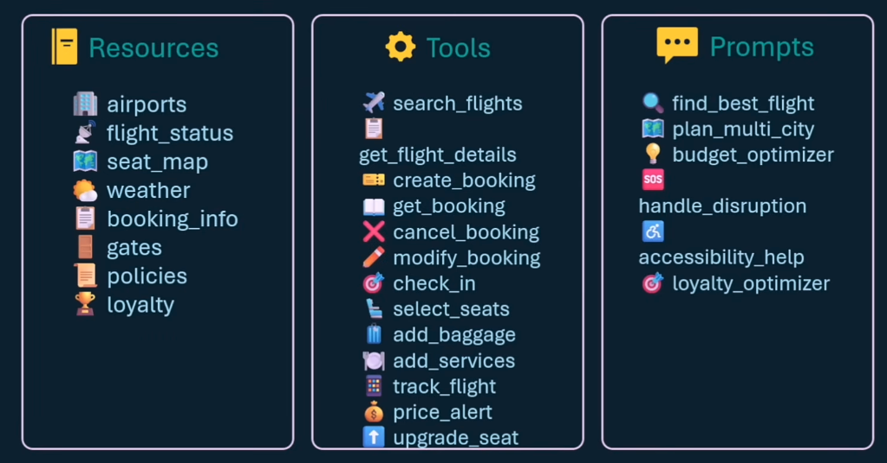
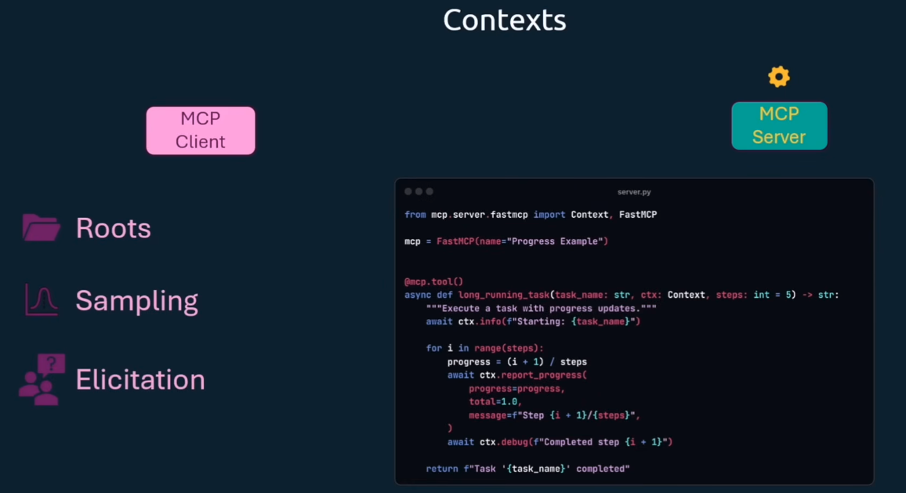
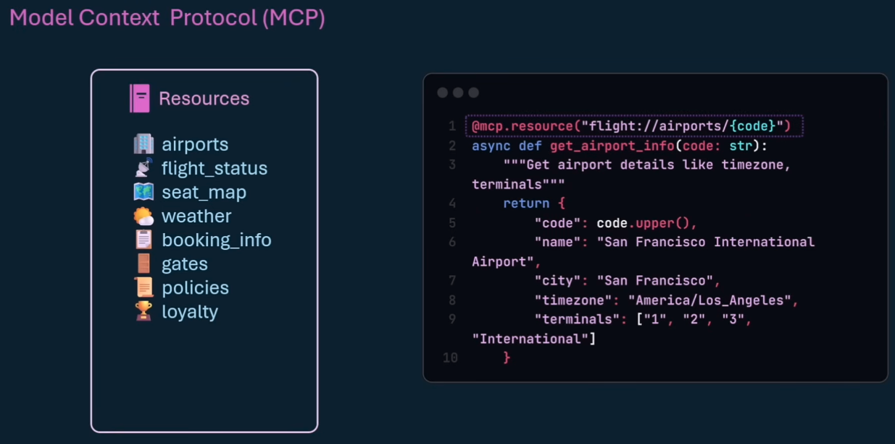
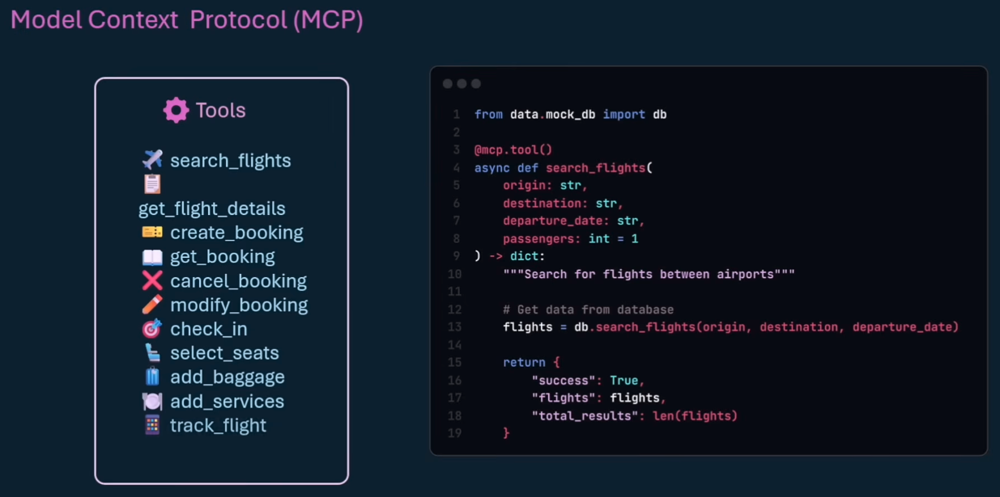
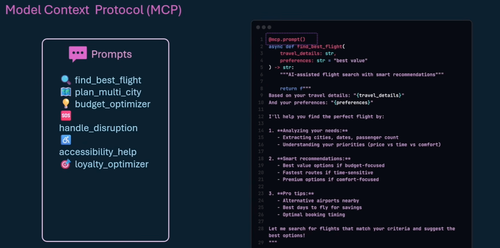
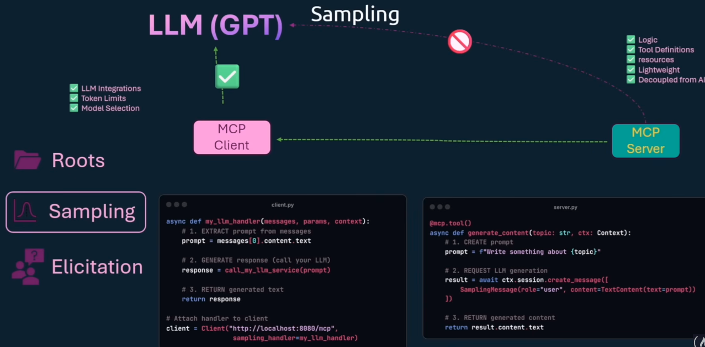
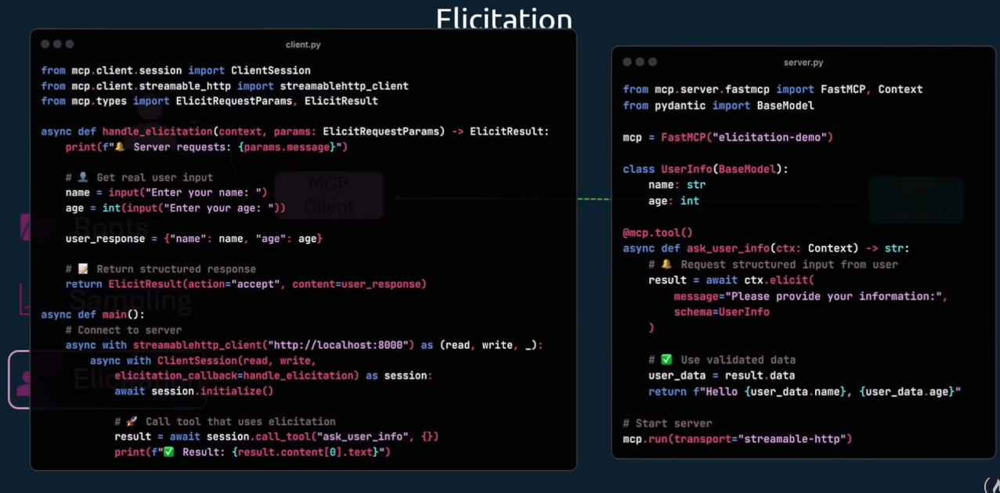
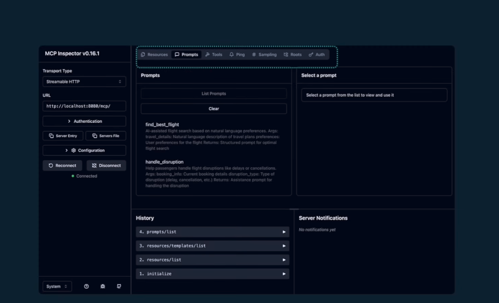
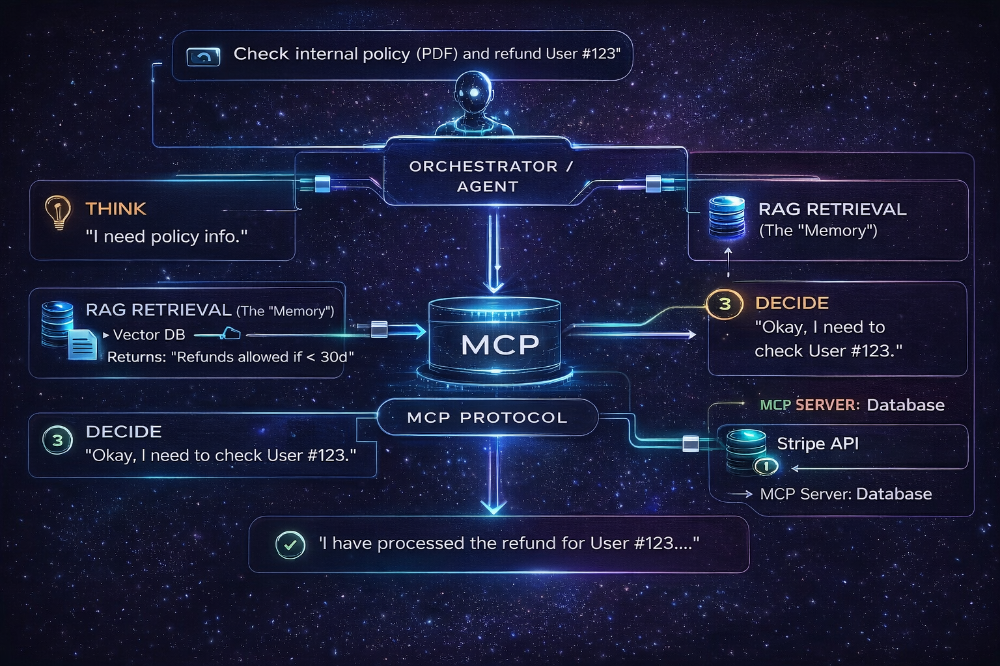

🤖 Model Context Protocol (MCP) & RAG
The Complete Guide to Building Context-Aware AI Agents
⌨️ cmd+k or / Search · Esc Clear · ⌘B
Back to Hub
🎓 Course Index
📺 Additional Learning Resources
🧠 RAG From Scratch
Deep dive into building Retrieval Augmented Generation systems from the ground up.
📚 Complete Series
Access the full collection of tutorials covering basic to advanced topics.
Module 0: Orientation & Mental Model
- What MCP is vs what it is not
- Brain–Body–World model
- Why MCP replaces plugins
🔌 What is MCP?
MCP (Model Context Protocol) is the open standard for connecting AI models to their data environment. It is not an LLM itself; it is the infrastructure that connects models to the real world.
Think of it as USB-C for AI. Before USB-C, every device had a custom cable. Before MCP, every tool had a custom API connector. MCP standardizes this.

Brain (LLM) ↔ Nervous System (Client) ↔ Body (Server) ↔ World (Data)
Module 1: Architecture & Core Concepts
The wire protocol. MCP is stateless.
Client: call_tool("list_files", path=".")
Server: result: ["file1.txt"]
Stdio: Process-based (coding agents).
SSE (HTTP): Network-based (enterprise apps).


Module 2: MCP Server Skeleton (FastMCP)
We use the FastMCP Python SDK to handle the lifecycle and protocol details
automatically.
from mcp.server.fastmcp import FastMCP # 1. Initialize Server mcp = FastMCP("My First Server") # 2. Keep it running if __name__ == "__main__": mcp.run(transport="stdio")
Module 3: Resources (Read-Only Knowledge)

Resources are passive data sources explicitly exposed to the LLM. Think of them as "File Reads" via a URI.
# Exposing a dynamic resource @mcp.resource("system://logs/{service}") def get_logs(service: str) -> str: """Read logs for a specific service.""" return open(f"/var/log/{service}.log").read()
Module 4: Tools (Action Layer)

Tools are active functions that the model can call. They should be atomic and safe.
@mcp.tool() def list_directory(path: str) -> str: """Safe listing of directory contents.""" if not path.startswith("/safe/root"): raise ValueError("Access Denied") return str(os.listdir(path))
Module 5: Prompts (Reusable Intelligence)

Prompts allow servers to dictate the persona and context the client should use.
You are a DevOps assistant.
RULES:
1. NEVER run delete commands without confirmation.
2. Always use `list_directory` before `cat`.
3. Be concise.
Module 6: MCP Client Fundamentals
The Client (Coordinator) is responsible for maintaining the connection with the Server (Worker) and the LLM (Brain).
Client Runtime Loop
- Connect: Spawn server process (stdio) or connect socket (SSE).
- Handshake: Exchange capabilities (prompts, resources, tools).
- Loop:
- User Input + Tool Definitions → LLM
- LLM decides to call tool → Client executes
call_tool - Client feeds result back to LLM → LLM summarizes
Module 7: Sampling (LLM-in-the-Loop)

Servers are "headless"—they don't have an LLM. When a server needs "intelligence" (e.g., to summarize a file it just read), it uses **Sampling** to ask the Client's LLM to do it.
Module 8: Elicitation (Human-in-the-Loop)

Never guess. If a tool needs a parameter (e.g., "GitHub Token"), use **Elicitation** to ask the user via the Client UI, rather than hallucinating a fake token.
Module 9: Roots, Context & Progress
Defines the "filesystem scope". A server should only see what the client explicitly allows
(e.g., /User/project).
For long tasks (converting video), servers send progress tokens so the Client calls display a loading bar.
Module 10: Security, Auth & Trust Boundaries
Use os.path.commonpath to ensure no tool escapes the SAFE_ROOT.
Sensitive tools (delete_file, make_payment) should require explicit
user confirmation flags configured in the Client.
Module 11: MCP Inspector & Observability

Don't guess why your tool failed. Use the MCP Inspector to test tools manually before hooking them up to an LLM.
npx @modelcontextprotocol/inspector python my_server.py
Module 12: Deployment Patterns
- Local Desktop Agents: Run via Stdio (Claude Desktop). Zero latency, high security.
- Remote Sidecars: Run as a Docker container next to your app. Connect via SSE.
- Central Hubs: Enterprise gateway managing hundreds of tools.
Final Capstone Project
Host OS Manager
A full-featured server combining everything: Sandboxing, Tools, Resources, and System/psutil integration.
import os import glob import psutil from mcp.server.fastmcp import FastMCP # Initialize mcp = FastMCP("macOS-Manager") SAFE_ROOT = os.path.expanduser("~/Desktop") def validate_path(path: str) -> str: abs_path = os.path.abspath(os.path.join(SAFE_ROOT, path)) if not abs_path.startswith(SAFE_ROOT): raise PermissionError("Access denied") return abs_path @mcp.tool() def list_directory(path: str = ".") -> str: target = validate_path(path) return str(os.listdir(target)) @mcp.resource("system://stats") def get_stats() -> str: return f"CPU: {psutil.cpu_percent()}%" if __name__ == "__main__": mcp.run()
Bonus: RAG & Unified Stack
While MCP handles Actions, RAG handles Knowledge Retrieval. Modern agents use both.

RAG gives the LLM an "Open Book Exam" capability. It fetches PDFs, docs, and wikis before answering.
MCP acts as the "Arms and Legs", allowing the LLM to execute code, query databases, and manage files.
Real-World Examples
An agent connects to a Salesforce MCP Server. The user asks:
"How were Q3 sales?".
1. Agent calls `get_sales_data(start="2023-07-01", end="2023-09-30")`.
2. Agent receives JSON data.
3. Agent computes growth % using its internal math.
4. Agent calls `send_email` tool to report to manager.
A lawyer uploads 5,000 case files. They ask: "What is the precedent for digital
copyright in 2024?"
1. System embeds query.
2. Retrieves top 5 paragraphs from 5,000 files.
3. LLM summarizes the retrieved text into a concise argument citing the specific
case files.
User: "My internet is down."
1. RAG: Bot searches manuals. Finds "Check router status
lights."
2. Bot asks user to check lights.
3. User says "Red light."
4. MCP: Bot calls `check_connection_status(user_id)` tool via
ISP API.
5. MCP: API returns "Service Outage in Area."
6. Bot informs user no action needed.